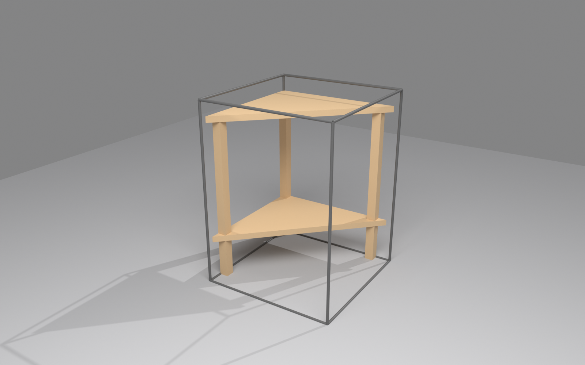
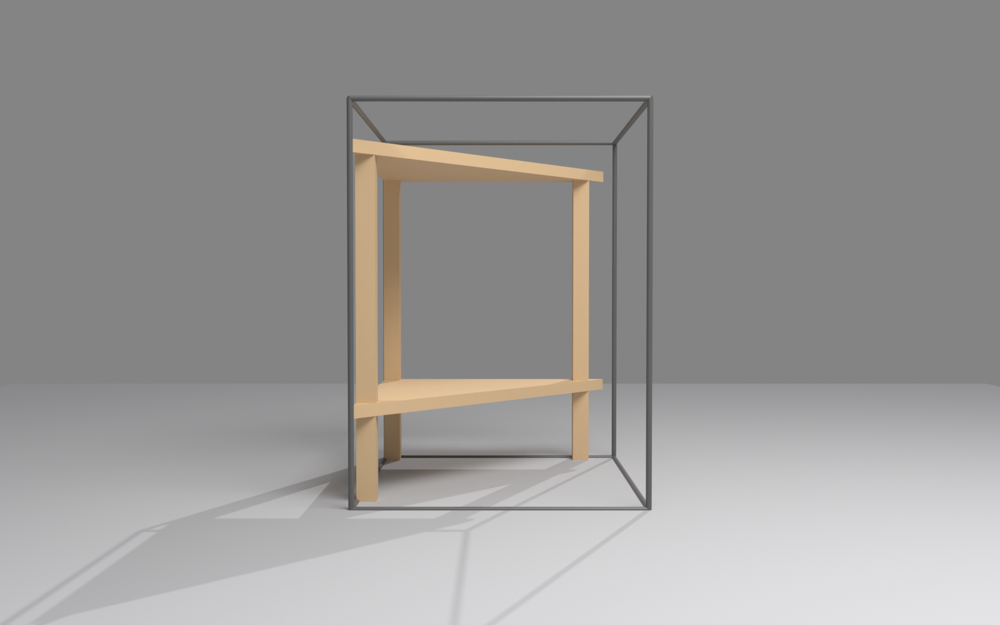

misc / shelf
A two-tier triangular shelf for the 40 × 40 × 55 cm cabinet in Palaiseau. This page re-checks the earlier plan, gives the geometry used for the renders and the animation, and lists what to buy at Castorama. All dimensions are in millimetres unless stated.
Drag to orbit, scroll to zoom. The model is built from model.json, generated by build_model.py.


The black frame is the 400 × 400 × 550 mm cabinet interior. Triangle footprint: 380 mm legs, 537 mm hypotenuse, right angle in the back-right corner.
| Item | Plan said | Problem | v2 |
|---|---|---|---|
| Shape | 38 back, 38 right, 15 front, 33 diagonal | Not a consistent shape. With a 38 × 38 right angle the hypotenuse must be 53.7 cm, and a 15 cm front edge does not close the figure. 33 cm is shorter than the legs, which cannot happen. | Right isosceles triangle, 380 mm legs, 537 mm hypotenuse, right angle in the back-right corner. Front-left stays open for reach. |
| Blank | Two triangles from 40 × 80 cm | Fine in principle, but the plan did not say how to cut them. | One 380 × 380 square, cut on the diagonal, gives both shelves with about 10 mm to spare on each side of the 400 mm board. |
| Legs | Three 27 × 27 posts, 50 cm | No joint described. Screws driven into end grain of a 27 mm post hold poorly and split the post. | Stacked posts: 3 × 120 mm under the lower shelf, 3 × 344 mm between the shelves. Each joint gets glue, two screws and one corner bracket. |
| Screw access | Not addressed | A middle post sits directly on the lower shelf, so screws from above at that spot are blocked. | Lower shelf brackets are fixed from underneath; middle-post brackets go down into the shelf top beside the post. |
| Heights | Not given | Without heights the shelves could collide with the cabinet top or the trap. | Lower shelf underside 120 mm above the floor; upper shelf top at 500 mm, leaving 50 mm under the 550 mm cabinet top. |
| Finish | Boiled linseed oil, 120 grit | Linseed oil cures slowly and is not truly waterproof. Oily rags can self-heat and catch fire. | Keep it, but seal end grain, wait for full cure before loading, and dispose of rags safely (see section 6). |
| Part | Qty | Size (mm) | Notes |
|---|---|---|---|
| Shelf blank | 1 | 380 × 380 × 18 | Cut from a 400 × 800 pine board. Mark the square, then cut the diagonal with the batten guide. |
| Triangular shelves | 2 | 380 / 380 / 537 × 18 | Both come from the diagonal cut. Mark them upper and lower. |
| Base posts | 3 | 27 × 27 × 120 | Under the lower shelf. |
| Middle posts | 3 | 27 × 27 × 344 | Between the shelves. |
| Corner brackets | 9 | 40 × 40 mm | One per joint: 3 base-to-lower, 3 lower-to-middle, 3 middle-to-upper. |
Batten total: 1392 mm plus about 12 mm of kerf, so a single 2.4 m batten is enough with about 1 m to spare.
Post positions are inset so every post sits fully under its shelf. Positions are in build_model.py.
| Item | Result | Price | Status |
|---|---|---|---|
| Pine board | 40 × 80 cm not found. The nearest Castorama listing is Tablette en pin massif 40 × 200 cm, 18 mm (PPA18400). One board gives the blank and a spare. | €16.90 | buy this |
| 27 × 27 batten | The planed 27 × 27 × 2400 mm listing is no longer sold. Castorama has lamelles collées 27 × 27 mm, 2.5 m. Planed is more dimensionally true than rough, which helps the post joints. Rough 27 × 27 2.40 m is at Bricomarché (PUGIN, bundle of 6), not Castorama. | not checked | check price |
| Boiled linseed oil | Phébus 250 ml is €6.49. The the Castorama “Huile de lin pour protéger Phébus 1 L” product page lists €8.79 (no direct link kept here). | €8.79 (1 L) | buy |
| Corner brackets, wood screws, clamps, saw, glue, sandpaper | Not found in the Castorama search. Brackets and glue are new to the list. | — | not checked |
Stock at the Palaiseau store was not verified. Castorama asks for a postal code on each product page, so check availability in the store or on castorama.fr with Palaiseau selected before the trip. Prices are from the product pages as fetched on 2026-10-16.
Before cutting: measure the cabinet at the back-right corner, where the trap and pipes usually sit. Cut a 380 mm cardboard triangle and test-fit it. If a pipe is in the way, shorten the legs.
Cutting: clamp the batten on the diagonal line with the saw kerf on the waste side. Support the board so the tail doesn't tear out. Cut the square first, then the diagonal.
Drilling: pre-drill 2.5 mm through the shelf and 2.5 mm into the post, countersink the shelf so the screw heads sit flush, and keep screws at least 15 mm from any edge.
Sanding: 120 grit, then 180 grit. Vacuum the dust off before oiling.
Oiling: seal all faces, with extra coats on the end grain. Typical guidance is three to four thin coats. Wipe off the excess after 20 to 30 minutes, leave 24 to 48 hours between coats in a dry room, and let it cure for at least two weeks before loading. Test on a scrap piece first.
Oily rags: spread them flat outdoors to dry, or soak them in water and put them in a sealed metal bin. Do not bundle them while damp with oil.
The oiling schedule is general guidance for boiled linseed oil, not taken from a product sheet. Check the Phébus label for the exact drying times.